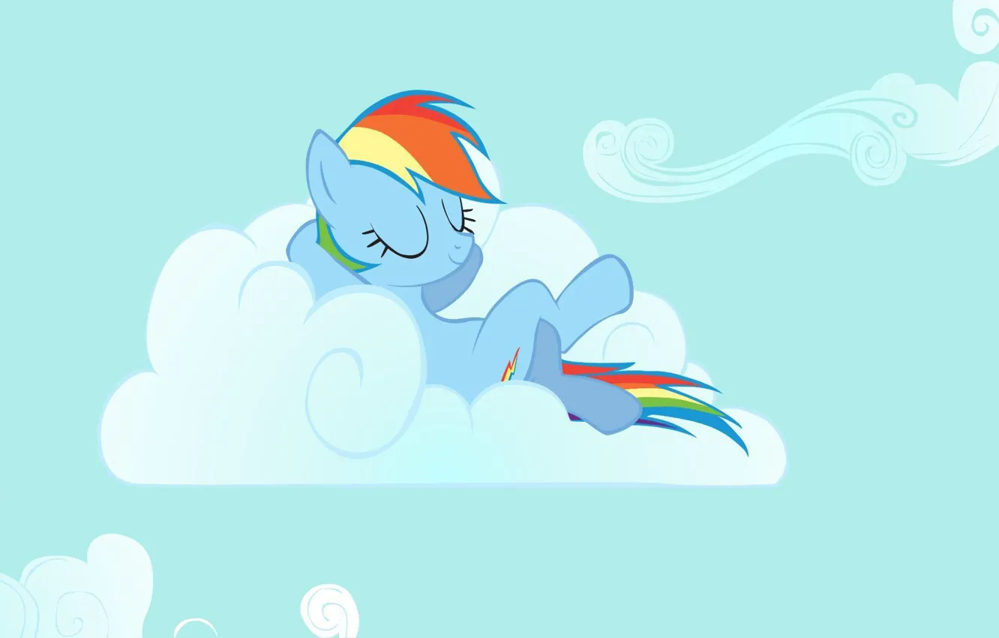

Добро пожаловать на наш сайт!
Наши услуги
Описание предоставляемых услуг...
Связаться с намиПортфолио
Примеры наших работ...
Контактная информация
Наши контакты...
ПодробнееОписание предоставляемых услуг...
Связаться с намиПримеры наших работ...
Наши контакты...
Подробнее